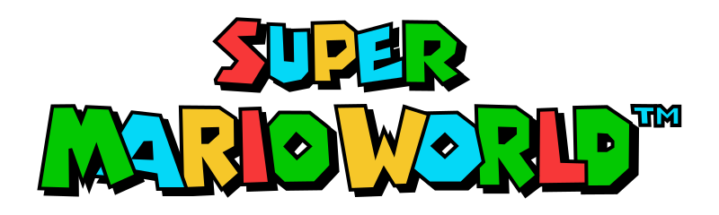

Historia de Super Nintendo
La Super Nintendo Entertainment System , conocida popularmente como la Super Nintendo, también llamada la Super Famicom en Japón (abreviada SFC) y la Hyundai Super Comboy en Corea del Sur, también nombrada oficialmente de forma abreviada como la Super NES o SNES en América y como la Super Nintendo en Europa, es la segunda videoconsola descontinuada de sobremesa de Nintendo y la sucesora de Nintendo Entertainment System (NES) en América y Europa. Mantuvo una gran rivalidad en todo el mundo con la Sega Mega Drive (o Sega Genesis) durante la era de 16 bits. Fue descontinuada en el año 1999 (2003 en Japón)y años más tarde, fue relanzada virtualmente a través de la Consola Virtual en la Wii en 2006, Wii U en 2013, Nintendo 3DS (solo la versión New) en 2016 y Nintendo Switch en 2019 a través del servicio en línea Nintendo Switch Online.
Volver arriba
Lanzamiento |
|---|
La Super Famicom se lanzó en Japón el miércoles 21 de noviembre de 1990 por US$210. Fue un éxito inmediato; las primeras 300.000 unidades se vendieron en apenas horas, y como consecuencia de la perturbación social generada, el gobierno japonés pidió a las empresas de videojuegos que planificaran los futuros lanzamientos de consolas en fin de semana. El lanzamiento del sistema también llamó la atención de la mafia japonesa (Yakuza), tomándose la decisión de distribuir el producto por la noche para evitar el robo. Super Famicom y SNES se lanzaron con pocos juegos, pero estos fueron bien recibidos en el mercado. En Japón, solo dos juegos estaban inicialmente disponibles: Super Mario World y F-Zero. En Norteamérica, Super Mario World se lanzó en un pack con la consola y otros títulos de lanzamiento; incluidos F-Zero, Pilotwings (ambos demostraban el "Modo 7" de capacidad de renderización pseudo-3D), SimCity, y Gradius III.

Volver arriba
Ver más: |
|---|